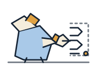
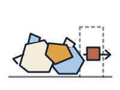
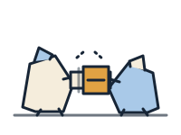
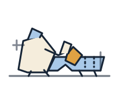

The Convenors
The People & Teams
MK 001Stabilize together.
Monochrome
120 × 110
Generated from the production manifest and SVG files. Do not edit this review board by hand.
Stabilize together.
Commit deliberately.

Sense before offering.

Make handoffs visible.

Create workable span.
Observe, model, choose.
Measure the organization.

Fit the intervention.